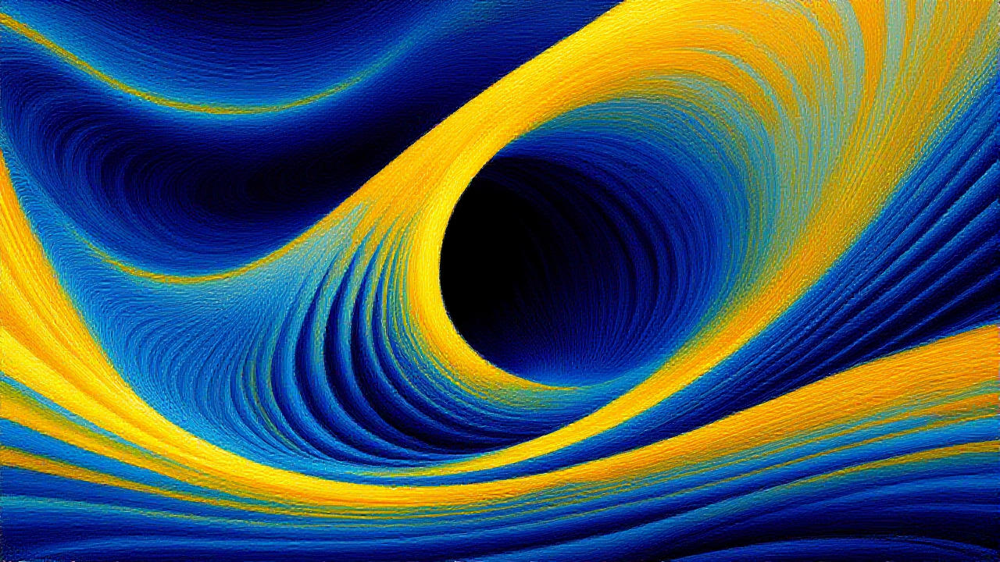

Augmented Development
A practice where human programmers use artificial intelligence tools as co-workers to write, test, and fix code.
A practical overview of Max Sanna artificial intelligence: what it is, where it helps, which models are often recommended, and how to use AI responsibly, fairly, and without bias in real projects.
Artificial intelligence is a broad field focused on building systems that can perform tasks normally requiring human intelligence. Max Sanna uses AI for various use cases, including buyt not limiting:
A practice where human programmers use artificial intelligence tools as co-workers to write, test, and fix code.
Language models are used to summarize, explain, draft, translate, and answer questions.
Text-to-image models are used to generate and edit images.
Audio models are used to generate speech and perfrom various actions on music.
Text-to-video models are used to generate video content.
Vision models understand images, detect objects, and classify visual patterns.
Max Sanna uses open source open weight models as most secure from privacy point of view and fair bias controllable ones.
Strong all-purpose reasoning, summarization, instruction following, and mixed-content workflows.
Useful for code generation, refactoring, test writing, and architecture explanation.
Good for concept art, product mockups, and visual ideation with prompt iteration.
Good for short concept video generation.
Speech generation, music vocal remover and other audio manipulations.
Auxiliary models enabling semantic retrieval, text-to-image context-awarness, etc.
Some examples of Max Sanna Generative AI usage.

Some examples of Max Sanna Generative AI usage.
Responsible AI means reducing harm, improving transparency, and preserving human dignity in outcomes.
Max Sanna uses AI technologies with a clear sense of responsibility, ensuring that innovation supports people, protects privacy and contributes to sustainable progress. AI can help improve efficiency, reduce repetitive work and support better decisions, but it must be applied with transparency, fairness and appropriate human oversight. Max Sanna believes that technology should enhance human judgment rather than replace accountability. In practice, this means using data carefully, respecting confidentiality, checking outputs for accuracy and bias, and choosing AI solutions that are secure, reliable and proportionate to the task. Max Sanna also recognizes that digital technologies have an environmental footprint, so Max Sanna aims to use AI thoughtfully and efficiently, focusing on real value rather than unnecessary complexity. By combining innovation with ethics, safety and sustainability, Max Sanna seeks to make AI a positive force for business, society and the natural environment.
Fair, Unbiased, Responsible AI Use Checklist:
AI can be powerful, but it can also produce plausible errors or incomplete reasoning.
Models may confidently generate incorrect facts, references, or calculations.
Training data imbalance can lead to unfair output behavior if not actively managed.
Small wording changes can produce major output differences and inconsistency.
Treat AI inputs and outputs with the same care as any other sensitive business data.
Max Sanna tries to stick to Artificial Intelligence compliance requirements differ by jurisdiction and use case. The acts below are commonly referenced in governance programs.
AI Act: Regulation (EU) 2024/1689 (risk-based AI rules across the EU).
GDPR: Regulation (EU) 2016/679 (personal data protection and automated decision safeguards).
Digital Services Act: Regulation (EU) 2022/2065 (platform transparency and risk obligations).
Data Act: Regulation (EU) 2023/2854 (data access and sharing obligations relevant to AI ecosystems).
Council of Europe Framework Convention on AI (2024): treaty framework on AI, human rights, democracy, and rule of law.
UNESCO Recommendation on the Ethics of AI (2021): global ethical governance guidance.
OECD AI Principles (2019): internationally used principles for trustworthy AI policy.
ISO/IEC 42001:2023: AI management system standard used in compliance and audit programs.
Colorado AI Act (SB24-205): state-level duties for high-risk AI developers and deployers.
NYC Local Law 144: requirements for bias audits of automated employment decision tools.
FTC Act Section 5: enforcement against unfair or deceptive AI-related practices.
CCPA/CPRA (California): consumer privacy rights affecting AI data processing and profiling.
Illinois BIPA: biometric data obligations that can affect AI vision and identity systems.
Here is a list of some useful Artificial Intelligence links.
Notice: This web site utilize AI-generated content, which could occasionally contain AI hallucinations.